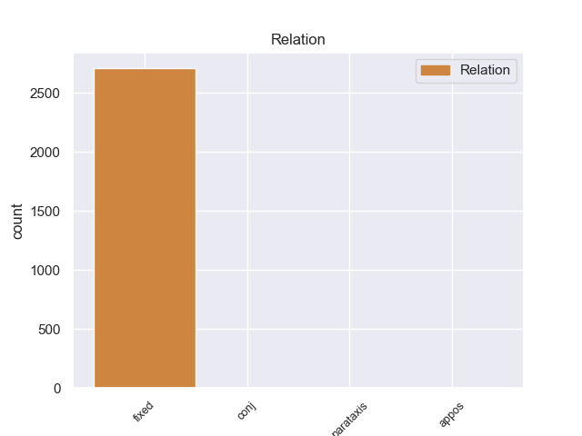
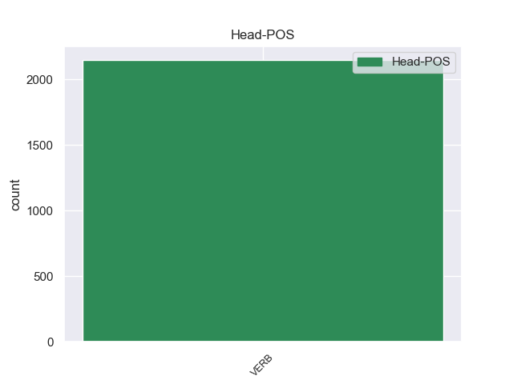
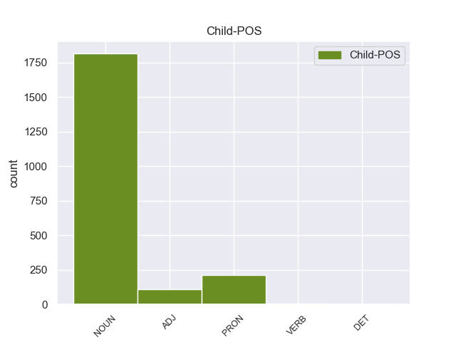

Distribution of features within this leaf



Morphosyntax Rules sorted by frequency.
- When the dependent token is the fixed multiword expression(fixed) of the head token, and the head token is ADP and the dependent token is NOUN, the Case needs to be Loc.
1 Под _ _ _ _ 0 _ _ _
2 " _ _ _ _ 0 _ _ _
3 признанием _ _ _ _ 0 _ _ _
4 Востоком _ _ _ _ 0 _ _ _
5 Рима _ _ _ _ 0 _ _ _
6 " _ _ _ _ 0 _ _ _
7 Иннокентий _ _ _ _ 0 _ _ _
8 III _ _ _ _ 0 _ _ _
9 имел _ _ _ _ 0 _ _ _
10 в в ADP _ _ 0 _ _ _
11 виду вид NOUN _ Animacy=Inan|Case=Loc|Gender=Masc|Number=Sing 10 fixed 10:fixed _
12 ограбление _ _ _ _ 0 _ _ _
13 крестоносцами _ _ _ _ 0 _ _ _
14 Константинополя _ _ _ _ 0 _ _ _
15 . _ _ _ _ 0 _ _ _
1 Было _ _ _ _ 0 _ _ _
2 горько _ _ _ _ 0 _ _ _
3 , _ _ _ _ 0 _ _ _
4 что _ _ _ _ 0 _ _ _
5 перестройку _ _ _ _ 0 _ _ _
6 оборвали _ _ _ _ 0 _ _ _
7 на на ADP _ _ 0 _ _ _
8 полпути _ _ _ _ 0 _ _ _
9 , _ _ _ _ 0 _ _ _
10 а _ _ _ _ 0 _ _ _
11 скорее _ _ _ _ 0 _ _ _
12 даже _ _ _ _ 0 _ _ _
13 в _ _ _ _ 0 _ _ _
14 самом _ _ _ _ 0 _ _ _
15 начале начало NOUN _ Animacy=Inan|Case=Loc|Gender=Neut|Number=Sing 7 conj 7:conj SpaceAfter=No
16 . _ _ _ _ 0 _ _ _
1 План _ _ _ _ 0 _ _ _
2 изобилует _ _ _ _ 0 _ _ _
3 расплывчатыми _ _ _ _ 0 _ _ _
4 формулировками _ _ _ _ 0 _ _ _
5 вроде вроде ADP _ _ 0 _ _ _
6 " _ _ _ _ 0 _ _ _
7 при _ _ _ _ 0 _ _ _
8 необходимости необходимость NOUN _ Animacy=Inan|Case=Loc|Gender=Fem|Number=Sing 5 appos 5:appos SpaceAfter=No
9 " _ _ _ _ 0 _ _ _
10 , _ _ _ _ 0 _ _ _
11 " _ _ _ _ 0 _ _ _
12 если _ _ _ _ 0 _ _ _
13 будет _ _ _ _ 0 _ _ _
14 сочтено _ _ _ _ 0 _ _ _
15 нужным _ _ _ _ 0 _ _ _
16 " _ _ _ _ 0 _ _ _
17 , _ _ _ _ 0 _ _ _
18 " _ _ _ _ 0 _ _ _
19 будет _ _ _ _ 0 _ _ _
20 стараться _ _ _ _ 0 _ _ _
21 " _ _ _ _ 0 _ _ _
22 . _ _ _ _ 0 _ _ _
non-conforming Examples:
1 В в ADP _ _ 0 _ _ _
2 первую _ _ _ _ 0 _ _ _
3 очередь очередь NOUN _ Animacy=Inan|Case=Acc|Gender=Fem|Number=Sing 1 fixed 1:fixed SpaceAfter=No
4 , _ _ _ _ 0 _ _ _
5 как _ _ _ _ 0 _ _ _
6 это _ _ _ _ 0 _ _ _
7 и _ _ _ _ 0 _ _ _
8 положено _ _ _ _ 0 _ _ _
9 , _ _ _ _ 0 _ _ _
10 он _ _ _ _ 0 _ _ _
11 вывел _ _ _ _ 0 _ _ _
12 в _ _ _ _ 0 _ _ _
13 верхнем _ _ _ _ 0 _ _ _
14 углу _ _ _ _ 0 _ _ _
15 гриф _ _ _ _ 0 _ _ _
16 " _ _ _ _ 0 _ _ _
17 секретно _ _ _ _ 0 _ _ _
18 " _ _ _ _ 0 _ _ _
19 . _ _ _ _ 0 _ _ _
1 Своевременно _ _ _ _ 0 _ _ _
2 исправлять _ _ _ _ 0 _ _ _
3 повреждения _ _ _ _ 0 _ _ _
4 не _ _ _ _ 0 _ _ _
5 удавалось _ _ _ _ 0 _ _ _
6 по _ _ _ _ 0 _ _ _
7 трем _ _ _ _ 0 _ _ _
8 причинам _ _ _ _ 0 _ _ _
9 : _ _ _ _ 0 _ _ _
10 во-первых _ _ _ _ 0 _ _ _
11 , _ _ _ _ 0 _ _ _
12 заявка _ _ _ _ 0 _ _ _
13 на _ _ _ _ 0 _ _ _
14 специалистов _ _ _ _ 0 _ _ _
15 , _ _ _ _ 0 _ _ _
16 посланная _ _ _ _ 0 _ _ _
17 за _ _ _ _ 0 _ _ _
18 номером _ _ _ _ 0 _ _ _
19 таким-то _ _ _ _ 0 _ _ _
20 , _ _ _ _ 0 _ _ _
21 удовлетворена _ _ _ _ 0 _ _ _
22 не _ _ _ _ 0 _ _ _
23 более _ _ _ _ 0 _ _ _
24 чем _ _ _ _ 0 _ _ _
25 на _ _ _ _ 0 _ _ _
26 десять _ _ _ _ 0 _ _ _
27 процентов _ _ _ _ 0 _ _ _
28 и _ _ _ _ 0 _ _ _
29 линейные _ _ _ _ 0 _ _ _
30 кадры _ _ _ _ 0 _ _ _
31 до до ADP _ _ 0 _ _ _
32 сих _ _ _ _ 0 _ _ _
33 пор пора NOUN _ Animacy=Inan|Case=Gen|Gender=Fem|Number=Plur 31 fixed 31:fixed _
34 не _ _ _ _ 0 _ _ _
35 укомплектованы _ _ _ _ 0 _ _ _
36 ; _ _ _ _ 0 _ _ _
37 во-вторых _ _ _ _ 0 _ _ _
38 , _ _ _ _ 0 _ _ _
39 работу _ _ _ _ 0 _ _ _
40 тормозили _ _ _ _ 0 _ _ _
41 неблагоприятные _ _ _ _ 0 _ _ _
42 метеорологические _ _ _ _ 0 _ _ _
43 условия _ _ _ _ 0 _ _ _
44 ; _ _ _ _ 0 _ _ _
45 в-третьих _ _ _ _ 0 _ _ _
46 … _ _ _ _ 0 _ _ _
1 Сложность _ _ _ _ 0 _ _ _
2 вопроса _ _ _ _ 0 _ _ _
3 заключалась _ _ _ _ 0 _ _ _
4 в _ _ _ _ 0 _ _ _
5 том _ _ _ _ 0 _ _ _
6 , _ _ _ _ 0 _ _ _
7 что _ _ _ _ 0 _ _ _
8 во во ADP _ _ 0 _ _ _
9 время время NOUN _ Animacy=Inan|Case=Acc|Gender=Neut|Number=Sing 8 fixed 8:fixed _
10 войны _ _ _ _ 0 _ _ _
11 Ефимова _ _ _ _ 0 _ _ _
12 находилась _ _ _ _ 0 _ _ _
13 в _ _ _ _ 0 _ _ _
14 оккупации _ _ _ _ 0 _ _ _
15 . _ _ _ _ 0 _ _ _
1 Но _ _ _ _ 0 _ _ _
2 следует _ _ _ _ 0 _ _ _
3 иметь _ _ _ _ 0 _ _ _
4 в _ _ _ _ 0 _ _ _
5 виду _ _ _ _ 0 _ _ _
6 , _ _ _ _ 0 _ _ _
7 что _ _ _ _ 0 _ _ _
8 автобусы _ _ _ _ 0 _ _ _
9 зимой _ _ _ _ 0 _ _ _
10 ходят _ _ _ _ 0 _ _ _
11 нерегулярно _ _ _ _ 0 _ _ _
12 , _ _ _ _ 0 _ _ _
13 особенно _ _ _ _ 0 _ _ _
14 во во ADP _ _ 0 _ _ _
15 время время NOUN _ Animacy=Inan|Case=Acc|Gender=Neut|Number=Sing 14 fixed 14:fixed _
16 снежных _ _ _ _ 0 _ _ _
17 заносов _ _ _ _ 0 _ _ _
18 . _ _ _ _ 0 _ _ _
1 А _ _ _ _ 0 _ _ _
2 вот _ _ _ _ 0 _ _ _
3 по по ADP _ _ 0 _ _ _
4 поводу повод NOUN _ Animacy=Inan|Case=Dat|Gender=Masc|Number=Sing 3 fixed 3:fixed _
5 жилья _ _ _ _ 0 _ _ _
6 в _ _ _ _ 0 _ _ _
7 Веселом _ _ _ _ 0 _ _ _
8 нельзя _ _ _ _ 0 _ _ _
9 сказать _ _ _ _ 0 _ _ _
10 ничего _ _ _ _ 0 _ _ _
11 утешительного _ _ _ _ 0 _ _ _
12 . _ _ _ _ 0 _ _ _